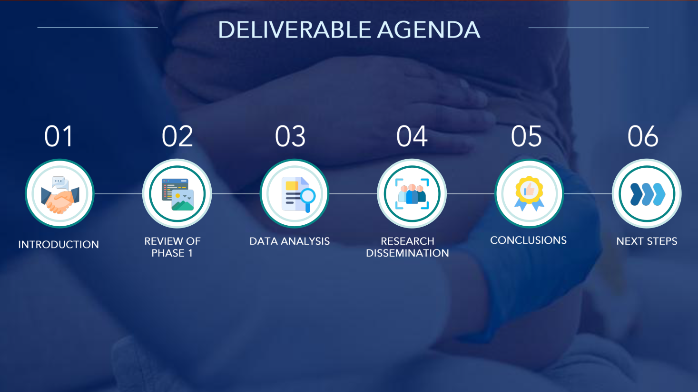

Blue Shield of California
Turning 1,200-plus messy data points into a product artifact clinicians could use.
Black women in California face a 36.6% C-section rate against a 31.1% state average. The disparity is driven by systemic barriers, and the qualitative signal was scattered and hard to act on.
I designed a mixed-methods study, led 30-plus provider interviews, and benchmarked frontline data against ACOG and CMQCC clinical standards to locate the real gaps.
A centralized coding system that sorted 1,200-plus data points by cause, region, and provider type, which surfaced the patterns behind five structural recommendations, plus a provider one-pager built for actual clinical use.
Dense research only matters if the people on the front line can act on it.
I presented to UC Berkeley MPH candidates with an invitation to meet the Dean of Public Health. My recommendations informed expanded budget for maternal mortality prevention and doula training in Northern California.
